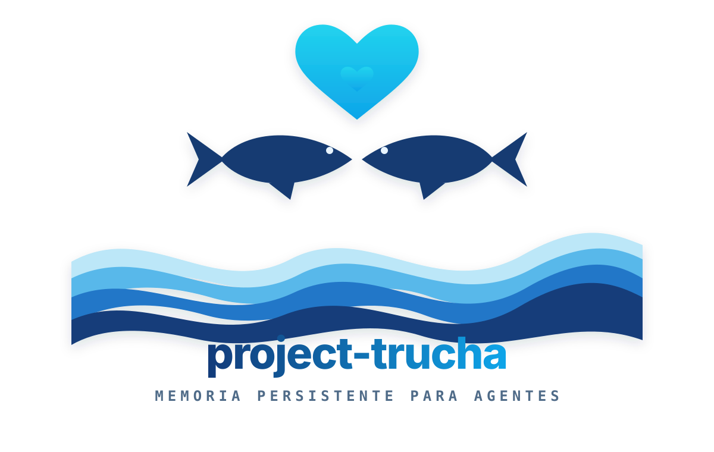

Toolkit colaborativo y local-first de memoria persistente para agentes de código: indexá un codebase y recuperalo con búsqueda híbrida —léxica + vectorial— sin infraestructura pesada.
Los agentes de código son tan buenos como el contexto que pueden recuperar. Sin memoria persistente, cada sesión arranca de cero. project-trucha mantiene un índice del codebase —léxico y semántico— que el agente consulta en milisegundos, sin levantar servicios externos ni pagar latencia de red.
Recorre, trocea y persiste el repo; reindexa por hash/mtime sólo lo que cambió.
Léxica (BM25) + semántica (vectorial) fusionadas en una sola respuesta.
Guarda notas y ADRs asociados al código y los recupera por contexto.
Buscamos el motor de memoria de menor fricción para un agente local. Hipótesis actual a validar: SQLite + FTS5 (+ sqlite-vec) — un archivo, sin servidor, búsqueda híbrida. Una vector DB dedicada se justifica a escala.
| Opción | Fricción | Vectorial | Veredicto |
|---|---|---|---|
| SQLite + FTS5 + sqlite-vec | Baja · embebido | KNN (extensión) | ★ hipótesis |
| SQLite + FTS5 | Muy baja | — | base léxica |
| LanceDB | Baja · embebido | rápida | alternativa |
| ChromaDB / pgvector | Media–alta | dedicada | a escala |
Se cierra en ADR-0001. Ver el detalle en el deck →
"te quiero mucho como la trucha al trucho"